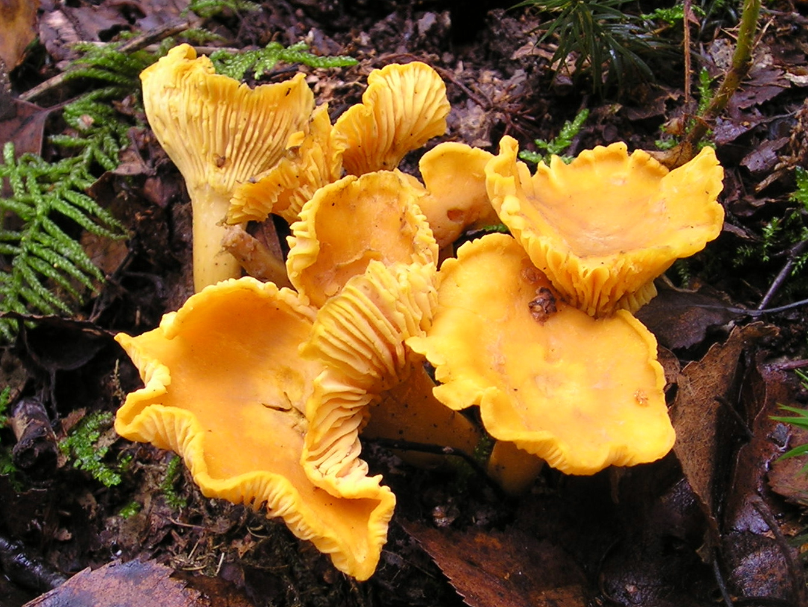

Cepurīte ir izliekta, vēlāk piltuvveida. Kāts nedaudz gaišāks. Mīkstums baltgandzeltens vai dzeltenīgs, sīksts. Ļoti reti tārpaina (tikai ļoti sausā laikā), reizēm sastopami kailgliemeži. Šīs sēnes ļoti ilgi uzglabājas svaigas, reti kad tās bojā kukaiņu kāpuri vai gliemji, ir viegli tīrāmas. Satur līdz 6,7 mg % C vitamīna, t.i. 2 reizes vairāk nekā apšu bekas un 7—8 reizes vairāk nekā bērzlapes. Nedrīkst lietot vecas, appelējušas vai citādi bojājušās gailenes, jo šādos gadījumos tās var būt arī indīgas. Aug sausos lapu un skuju koku mežos no jūlija līdz oktobrim (pirmajām rudens salnām), bet vislabāk tās aug ne visai biezās 10—15 gadu vecās priežu jaunaudzēs.
| Enerģija | 26,77 kcal |
| Tauki | 0,69 g |
| Ogļhidrāti | 1,54 g |
| Proteīns | 1,96 g |
| Cukurs | 1,44 g |
| Piesātinātie tauki | 0,04 g |
| Sāls | 5,10 mg |